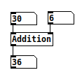

Adding ports
Supported bindings: all
Our processor so far does not process much. It just reacts to an external trigger, to invoke a print function.
Note that the way this trigger is invoked varies between environments: in Python, we called a
process()function, while in PureData, we sent a bang to our object. That is one of the core philosophies of Avendish: bindings should make it so that the object fits as much as possible with the environment's semantics and idioms.
Most actual media processing systems work with the concept of ports to declare inputs and outputs, and Avendish embraces this fully.
Here is the code of a simple processor, which computes the sum of two numbers.
struct MyProcessor
{
static consteval auto name() { return "Addition"; }
struct
{
struct { float value; } a;
struct { float value; } b;
} inputs;
struct
{
struct { float value; } out;
} outputs;
void operator()() { outputs.out.value = inputs.a.value + inputs.b.value; }
};
Compiling and running this yields for instance a PureData object which can be used like this:

Note that the object respects the usual semantics of PureData: sending a message to the leftmost inlet will trigger the computation. Sending a message to the other inlets will store the value internally but won't trigger the actual computation.
For some objects, other semantics may make sense: creating an alternative binding to PureData which would implement another behaviour, such as triggering the computation only on "bang" messages, or on any input on any inlet, would be a relatively easy task.
Let's try in Python:
>>> import pymy_processor
>>> proc = pymy_processor.Addition()
>>> proc.process()
>>> p.input_0 = 123
>>> p.input_1 = 456
>>> p.process()
>>> p.output_0
579.0
Here the semantics follow usual "object" ones. You set some state on the object and call methods on it, which may change this state.
One could also make a binding that implements functional semantics, by passing the state of the processor as an immutable object instead. Python is already slow enough, though :p
Syntax explanation
Some readers may be surprised by the following syntax:
struct { float value; } a;
What it does is declare a variable a whose type is an unnamed structure.
Note that this is a distinct concept from anonymous structures:
struct { float value; };
which are legal in C but not in C++ (although most relevant compilers accept them), and are mostly useful for implementing unions:
union vec3 {
struct { float x, y, z; };
struct { float r, g, b; };
};
union vec3 v;
v.x = 1.0;
v.g = 2.0;
Motivation for using unnamed structures in Avendish is explained afterwards.
Naming things
In an ideal world, what we would have loved is writing the following code:
struct MyProcessor
{
static consteval auto name() { return "Addition"; }
struct
{
float a;
float b;
} inputs;
struct
{
float out;
} outputs;
void operator()() { outputs.out = inputs.a + inputs.b; }
};
and have our Python processor expose us variables named a, b and out. Sadly, without reflection on names, this is not possible yet. Thus, in the meantime we use structs to embed metadata relative to the ports:
struct MyProcessor
{
static consteval auto name() { return "Addition"; }
struct
{
struct {
static consteval auto name() { return "a"; }
float value;
} a;
struct {
static consteval auto name() { return "b"; }
float value;
} b;
} inputs;
struct
{
struct {
static consteval auto name() { return "out"; }
float value;
} out;
} outputs;
void operator()() { outputs.out.value = inputs.a.value + inputs.b.value; }
};
Now our Python example is cleaner to use:
>>> import pymy_processor
>>> proc = pymy_processor.Addition()
>>> proc.process()
>>> p.a = 123
>>> p.b = 456
>>> p.process()
>>> p.out
579.0